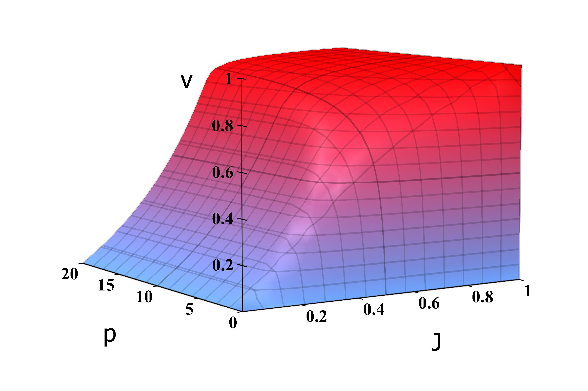

<div class="blurb">
	<!--img style="float: right;" src="images/mypic_cropped.jpg" width="30%"></img-->
<!-- 	<h2>Hi there, I'm Utsav Sadana!</h2>
	<p>I am a PhD student in Management Science at <a href = "http://www.hec.ca/">HEC Montreal</a> working with <a href="http://www.hec.ca/profs/georges.zaccour.html">Prof. Georges Zaccour<a/>, in dynamic game theory.
	<p>Earlier, I graduated from IIT Kanpur with Bachelors in Materials Science and Engineering, and Masters in Economics. In my Masters thesis, I worked with Dr. Debayan Pakrashi on estimation of corruption in the judiciary of Bangladesh.
 -->
	<table width="840" cellspacing="0" cellpadding="20" border="0" align="center">
  	<tbody>
		<tr><td>

		<p align="center"><font size="7">Utsav Sadana</font><br>
    		<b>Email</b>:
    		<font id="email" style="display:inline;">utsavsadana13-at-gmail.com</font>
  		</p>
		<table width="100%" cellspacing="0" cellpadding="20" border="0" align="center">
			
  			<tbody><tr>
    			<td width="67%" valign="middle" align="justify">
				<p>I am a PhD student in Management Science at <a href = "http://www.hec.ca/">HEC Montreal</a> working with <a href="http://www.hec.ca/profs/georges.zaccour.html">Prof. Georges Zaccour<a/>, in dynamic game theory>. </p>
				<p>Earlier, I graduated from IIT Kanpur with Bachelors in Materials Science and Engineering, and Masters in Economics. In my Masters thesis, I worked with Dr. Debayan Pakrashi on estimation of corruption in the judiciary of Bangladesh.</p>
    			</td>

    			<td width="33%">
				<a href="images/mypic_cropped.jpg">
				</a>
			</td>
  			</tr></tbody>
		</table>
		<table width="100%" cellspacing="0" cellpadding="20" border="0" align="center">
			  <tbody><tr><td>
			    <sectionheading>News</sectionheading>
			    <ul>
			    <li> Two papers (<a href="#SAMPLERNN">sampleRNN</a> and <a href="#PIXELVAE">pixelVAE</a>) are on arXiv.
			    </li>
			    <li> <a href="#TEXTURE">Paper</a> explaining texture generation networks accepted at ICASSP, 2017.
			    </li>
			    <li>
				    My team won Xerox Research Innovation Challenge held in Decemeber 2015. The competition blog post lies <a href="https://simplifywork.blogs.xerox.com/2016/02/15/can-machine-learning-prevent-death-in-the-icu/">here</a>.
		 	    </li>

			    </ul>
			  </td></tr>
			</tbody>
		</table>
		<table width="100%" cellspacing="0" cellpadding="20" border="0" align="center">
		  <tbody><tr><td><sectionheading>Publications</sectionheading></td></tr>
		</tbody></table>
		<table width="100%" cellspacing="0" cellpadding="20" border="0" align="center">

		  	<tbody><tr>
    				<td width="33%" valign= "center" align="center"><a href="images/bayesian.jpg"></a>
    				</td>
				<td width="67%" valign= "top">
				      <p><a href="https://arxiv.org/abs/1612.07837" id="SAMPLERNN">
					
				      <heading>Bayesian Networks and Games of Deterrence></a><br>
					      Michel Rudnianski, <strong>Utsav Sadana</strong>, Hélène Bestougeff<br>
				      <em>Accepted at European Meeting on Game Theory SING11-GTM2015</em>, 2017
				      <br></p>

				      <div class="paper" id="sampleRNN">
				      <a href="https://arxiv.org/pdf/1612.07837v1.pdf">pdf</a> |
				      <a href="https://arxiv.org/abs/1612.07837">arXiv</a> |
					<a href="https://openreview.net/forum?id=SkxKPDv5xl">OpenReview</a> |
					<a href="https://github.com/soroushmehr/sampleRNN_ICLR2017">code</a> |
					<a href="https://soundcloud.com/samplernn/sets"> samples</a>
				      </div>
				</td>
  				</tr>	
			</tbody></table>
			<table width="100%" cellspacing="0" cellpadding="20" border="0" align="center">
    			<tbody><tr><td><br><p align="center"><font size="2">
				Template: <a href="https://people.eecs.berkeley.edu/~pathak/">this</a>, <a href="http://www.cs.berkeley.edu/%7Ebarron/">this</a>, <a href="http://www.cs.berkeley.edu/%7Eakar/">this</a>, <a href="http://www.cs.berkeley.edu/%7Esgupta/">this</a> and <a href="http://jeffdonahue.com/">this</a>
    			</font></p></td></tr>
			</tbody></table>
		</td></tr></tbody></table>
	
</div><!-- /.blurb -->
